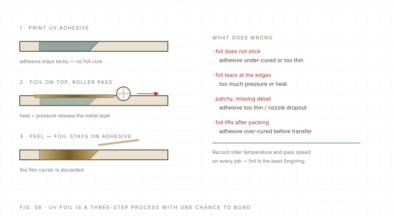

Process Advanced 6 min read Updated 2026-11
UV foil stamping: glue, heat and a very short window
UV foil is not a metallic ink. A tacky glue is printed exactly where the foil should stick, the foil is pressed on with heat and pressure, and the carrier is peeled away. Most failures are a glue or a temperature problem, not a foil problem.
The short answer: UV foil stamping is a gluing process, not a printing process. The printer lays a tacky adhesive only where metal should appear; a heated roller presses transfer foil against that adhesive; the foil sticks, and the carrier film is peeled away. If the glue is too thin, too old or partially cured, the foil comes off in patches and no amount of pressure will fix it.
The layer stack

On our UV DTF line the high-end build adds a glue channel and a hot-stamping varnish, so a laminated label can carry a foil area in the same workflow as the print. On flatbed work the glue is usually printed as a spot layer after the colour, and the stamping is done on a separate hot-stamping press. Either way the logic is the same: colour, then glue, then foil.
The three variables that decide the result
| Variable | Typical starting range | What happens when it is wrong |
|---|---|---|
| Temperature | Roughly 110–150 °C at the foil, depending on foil and glue; supplier data wins | Low: patchy transfer. High: glue softens too far, halo and foil bleed. |
| Pressure | A few tenths of a MPa, set by roller and area | Low: no contact. High: crushed detail, foil stretched. |
| Dwell time | A fraction of a second to about a second | Short: incomplete. Long: heat spreads into the colour layer. |
| Glue film | Thin but continuous; no skips | Thin/mist: patchy. Too thick: squeeze-out and halo. |
| Peel | Consistent angle and speed | Torn edges, foil left in fine detail. |
Where it fails in real jobs
- Halo: glue spreading beyond the image, or too much pressure at temperature — reduce glue and pressure first.
- Missing fine lines: foil cannot bridge hairlines; thicken the design or accept a break.
- Foil sticking outside the image: glue mist on the substrate; clean the head area and check the glue pass.
- Cracking on curved parts: standard foil is stiff; use a foil rated for the radius or reduce the stamped area.
- Whitening after lamination: trapped air or incompatible adhesive; test the laminate and foil together.
For a buyer, the useful questions are: which foil and glue are being used, what is the tested temperature window for my substrate, and can I see a sample after a wash or a rub test? A foil sample that looks perfect on the bench can still fail in the customer's hand.